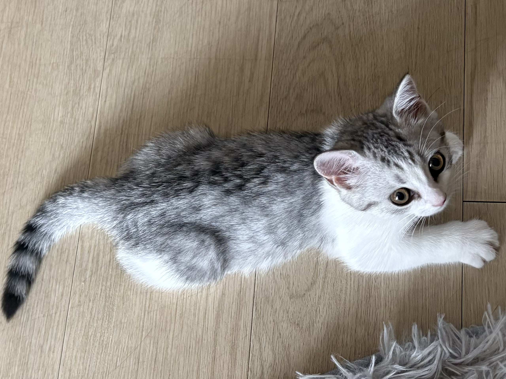
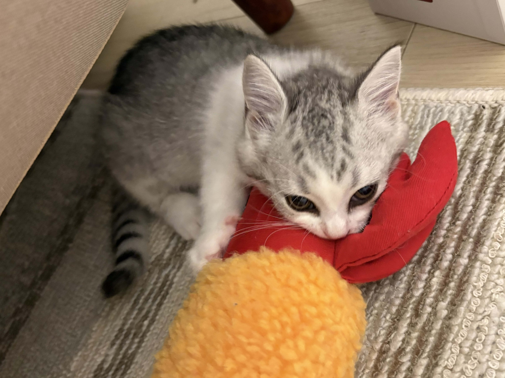

０１｜猫を知る

猫と暮らす楽しさの一つは、一匹ずつ違う個性を発見できることです。人のそばで過ごすのが好きな猫もいれば、少し離れた場所から静かに様子を見ている猫もいます。同じおもちゃでも、すぐに飛びつく子も、しばらく観察してから近づく子もいます。猫を知るためには、見た目や一般的なイメージだけで判断せず、その子自身の行動に目を向けることが大切です。
お気に入りの場所にも、その猫らしさが表れます。日差しの入る窓辺、部屋の隅に置かれた箱、人の気配を感じられる椅子の上など、猫が選ぶ場所はさまざまです。いつ、どこで、どのように過ごしているのかを観察すると、好きなことや安心できる環境が少しずつ見えてきます。すぐに距離を縮めようとせず、毎日の小さな発見を楽しみながら、その子を知っていきましょう。
０２｜しぐさを読む

猫は言葉の代わりに、しっぽや耳、目、体の姿勢を使って気持ちを伝えます。例えば、しっぽを立てて近づいてくるときは、親しみを示していることがあります。一方で、しっぽを大きく振っているときは、いら立っていたり、落ち着かなかったりする場合があります。しっぽの動きだけで気持ちを決めつけず、耳の向きや体の緊張、周囲の状況も一緒に見ることが大切です。
猫をなでているときも、反応をよく観察してみましょう。最初はくつろいでいても、途中で顔をそらしたり、耳を後ろに向けたり、しっぽを強く動かしたりすることがあります。そのような変化が見られたら、いったん手を止めて、猫がどうするかを待ちます。「もっと触りたい」という人の気持ちより、猫が今どう感じているかを大切にすることで、安心して過ごせる関係につながります。
０３｜毎日の習慣
猫の一日は、眠る、食べる、遊ぶ、毛づくろいをするなど、さまざまな行動の繰り返しでできています。何気なく見える日常にも、その子なりのリズムがあります。朝は窓の外を眺め、昼は静かな場所で眠り、夕方になるとおもちゃを追いかけるなど、時間帯によって過ごし方が変わることもあります。普段の様子を知ることは、猫への理解を深める第一歩です。
観察したことを短く記録すると、習慣がより分かりやすくなります。「今日はどこで寝ていたか」「どのおもちゃで遊んだか」「食事の様子はいつもと同じだったか」など、一日に一つ書くだけでも十分です。写真と一緒に残しておけば、あとから振り返る楽しみにもなります。記録を続けることで、好みの変化や、いつもと違う行動にも気づきやすくなります。
０４｜暮らしの環境
L猫が心地よく過ごせる部屋には、自分で選べる居場所があります。人と一緒に過ごせる場所だけでなく、一匹で静かに休める場所も用意しましょう。周囲を見渡せる高い場所や、体を隠せる箱、落ち着いて眠れるベッドなど、過ごし方の異なる場所があると、猫はそのときの気分に合わせて移動できます。家具やキャットタワーは、飛び乗っても倒れないように安定させることが大切です。
爪とぎやトイレ、水飲み場の位置も、猫の行動を見ながら考えましょう。人にとって便利な配置でも、猫にとって使いやすいとは限りません。爪とぎは素材や向きの好みがあり、寝床も置く場所によって使われ方が変わります。新しいものを一度にたくさん増やすより、反応を見ながら少しずつ調整してみましょう。窓辺に居場所をつくる場合は、窓や網戸の脱走対策も忘れずに行います。
０５｜仲良くなる
猫と仲良くなるためには、猫のペースを尊重することが大切です。近づいてこないときに追いかけたり、隠れているところから無理に出したりせず、安心して過ごせる距離を保ちましょう。猫から近づいてきたら、静かに声をかけて反応を見ます。触れるときも短い時間から始め、離れようとしたらそのまま見送ります。自分で近づき、自分で離れられることが、安心感につながります。
一緒に遊ぶ時間も、関係を深めるきっかけになります。猫じゃらしなどのおもちゃを使い、猫の視線や動きに合わせて遊んでみましょう。ただし、仲良くなる方法は遊ぶことや触ることだけではありません。同じ部屋でそれぞれ好きなことをしたり、近くで静かに休んだりする時間も大切です。特別なことをしなくても、毎日の穏やかな時間を積み重ねることで、少しずつ信頼が育っていきます。